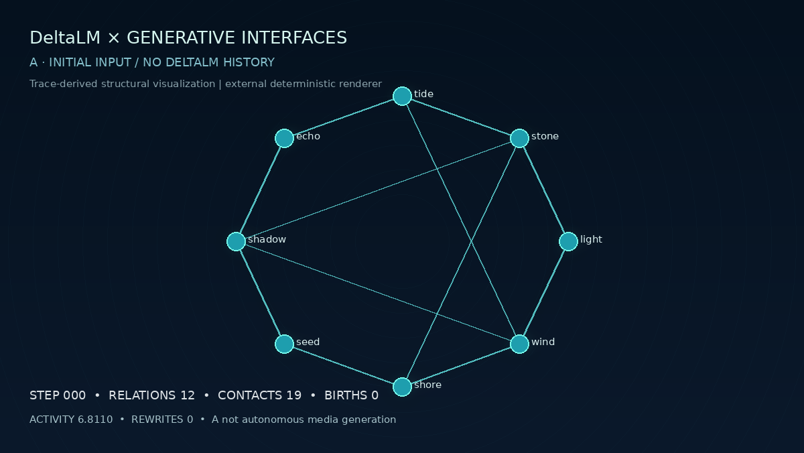
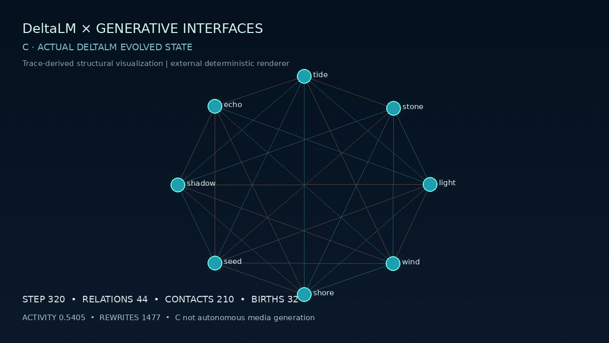

A · 初始条件
输入只有研究者指定的八个名称和十二段初始关系；画面由固定映射绘制。
保留原先十项 Showcase；本页是新增的 11–14 号文字、图像、音频、视频接口研究展示。

输入只有研究者指定的八个名称和十二段初始关系；画面由固定映射绘制。

实际运行的第 320 步：44 段关系。并非模型生成了真实地理或生物语义。
外部程序产生的 220 Hz 与 330 Hz 音，8 秒。
当前活动量、关系数和接合值以固定公式映射成频率与振幅。这是声化，不是 GPT 合成音乐。
相同时长的无演化视频参考。
每个可见帧由真实 DeltaLM 保存的状态重放，不含编造的新增结构。
潮水缓慢经过石头，风将岸上的细沙推向水边。种子落在一处尚未干透的凹陷里。没有人在此宣布一件事即将开始。
最初只有十二段初始关系。第四十步累计形成了三十二段衍生关系；但在第三百二十步，活动并没有因此继续增强。新的联系仍在，微光却趋于平静。
© 2026 Carlo Young · Apache-2.0 · 本界面只提供离线证据查看，不调用 GPT、不在浏览器实时计算 DeltaLM。B 的媒体生成对照、D 的已训练语义生成接口未实施，不能据此评价全面兼容性或与 LLM 的训练优劣。